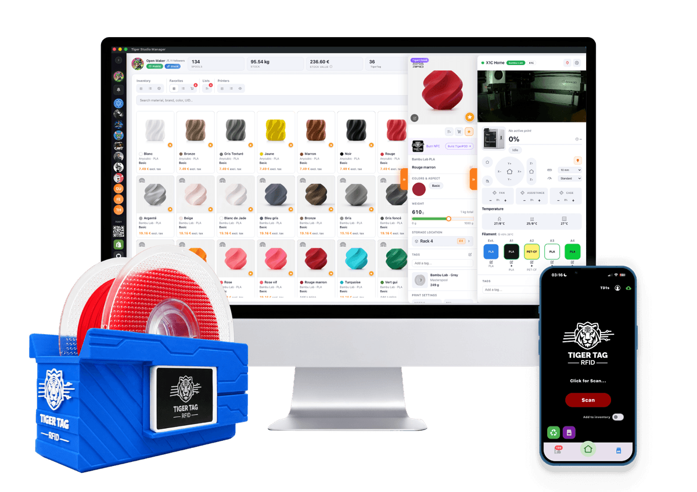

Cloud + LAN firmware
The official FlashForge × TigerSystem firmware for the Creator 5 Pro: keep FlashForge Cloud, and reach the printer on your network at the same time.
Finding the latest version…
Verify the file — SHA-256
File:
The official FlashForge × TigerSystem firmware for the Creator 5 Pro: keep FlashForge Cloud, and reach the printer on your network at the same time.
When the printer offers an update on its screen (or under Tools → Firmware), it installs FlashForge's standard firmware — and Cloud + LAN is gone. Tap < to skip it and update from here instead. Already accepted one? Just reinstall this file by USB.
FlashForge's standard USB update — shown in their official video Upgrade firmware via USB.
FAT32 (FAT / FAT16 also work), MBR partition table.
Not in a folder. Don't rename or unpack it — the printer opens it itself. One firmware file only.
Before plugging anything in.
Into the printer's USB port.
It finds the file and installs it. Don't cut the power while it works.
Once the printer has restarted on the new version. Done.
Out of the box, a Creator 5 makes you choose between Cloud and LAN. Not any more.
| Stock | FlashForge × TigerSystem | |
|---|---|---|
| FlashForge Cloud — app, remote access | ✓ | ✓ |
| LAN — local tools on your network | ✓ | ✓ |
| Both at the same time | ✕ | ✓ |
| Tiger Studio, Tiger NFC Connect and TigerSpool with Cloud on | ✕ | ✓ |

The spool's identity belongs to its owner — not to a printer brand.
TigerSystem is the open ecosystem for 3D-printing filament. A TigerTag NFC chip carries each spool's full profile in an open format any device can read. With this firmware, your Creator 5 joins it: Tiger Studio, Tiger NFC Connect and TigerSpool read the chip of any TigerTag brand — or one you made at home — and put the filament in the right slot.
Every piece is published, readable and free to build on.
Thank you, FlashForge. This is an official FlashForge firmware, developed by their engineering team at TigerTag's request and in close collaboration with us, and published here with their agreement. Opening a printer to an ecosystem that is not your own is a rare decision — every maker who owns one benefits from it.